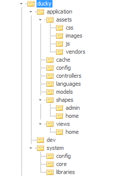

Cấu trúc thư mục
- Cấp độ: Cơ bản
- Bắt buộc: Rất cao
Chào mừng quay trở lại với thế giới vịt :p
Ở bài viết này, chúng ta sẽ cùng tìm hiểu về cấu trúc thư mục của Ducky.
Một nguyên tắc: Tuyệt đối không tạo tệp và thư mục lung tung. Vịt không thích điều này.
Tổng quan

Hình: Cấu trúc thư mục của bộ source Ducky chuẩn (dành cho Dev core)
Các thư mục trong hình trên được giải thích ở bảng dưới đây:
| Tên thư mục | Chức năng | Đuôi tệp |
|---|---|---|
| application | Chứa các tệp của ứng dụng | - |
| ../assets | Chứa các tệp tĩnh | *.js,*.css,*.png,*.jpg |
| ../cache | Chứa các tệp phục vụ caching | - |
| ../config | Chứa các tệp thiết lập của ứng dụng | *.conf.php |
| ../controllers | Chứa các tệp điều khiển | *.controller.php |
| ../languages | Chứa các tệp ngôn ngữ | *.language.php |
| ../models | Chứa các tệp tương tác với DB | *.model.php |
| ../shapes | Chứa các tệp của layout | *.shape.php |
| ../../home | Chứa các tệp của shape home |
*.view.php |
| ../../admin | Chứa các tệp của shape admin |
*.view.php |
| ../views | Chứa các view | *.html |
| ../../home | Chứa các view của controller Home |
*.html |
| system | Chứa các tệp của hệ thống | - |
| ../config | Chứa các tệp thiết lập của hệ thống | *.conf.php |
| ../core | Chứa các lớp 'hạt nhân' của Ducky | *.class.php |
| ../libraries | Chứa các tệp thư viện | *.lib.php |
Các lưu ý
Không chỉnh sửa các tệp trong thư mục system
Thư mục system là thư mục hệ thống của Ducky, chứa các lớp và thư viện điều khiển quan trọng, đặc biệt là các lớp:
- Lớp View: Điều khiển Template Engine
- Lớp App: Điều khiển việc chạy ứng dụng
- Lớp Route: Điều khiển URL
Việc chỉnh sửa các tệp này cần được làm bởi người thông hiểu Ducky và có trách nhiệm phát triển framework cho nhóm.
Đừng nhầm lẫn thư mục config của hệ thống và của ứng dụng
Thư mục config có cả trong thư mục application và thư mục system. Mặc dù đều chứa tệp thiết lập nhưng lại có ý nghĩa khác nhau:
application/config: Các tệp trong thư mục này lưu các thiết lập do người dùng tạo ra. Người dùng ở đây chính là coder có trách nhiệm phát triển ứng dụng.system/config: Các tệp trong thư mục này lưu các thiết lập mặc định của Ducky, các thiết lập này được cài sẵn và chỉ thay đổi khi Ducky đưa ra phiên bản mới.
Tên tệp luôn là tên lớp
Ở các thư mục như controllers, models, core thì tên tệp luôn là tên lớp.
Ví dụ:
- Tệp
login.controller.phpsẽ chứa lớpLoginController - Tệp
login.model.phpsẽ chứa lớpLoginModel - Tệp
View.class.phpsẽ chứa lớpView
Tên view là tên của controllerFunc, thư mục chứa view đó trùng tên với tên của controller
Ở thư mục views sẽ chứa nhiều thư mục con, tên các thư mục con đó chính là tên của controller tương ứng. Đồng thời, các tệp trong các thư mục đó đều trùng tên với controllerFunc tương ứng.
Ví dụ:
- Thư mục
views/homechính là thư mục chứa các view của controllerHome - Tệp
views/home/index.htmlchính là view của controller functionindex(hàm này nằm trong lớpHome
Chỉ thêm thư mục ở thư mục views để tránh hư hại hệ thống
Cấu trúc thư mục được thiết kế là phù hợp nhất đối với các yêu cầu của Ducky. Và sẽ ảnh hưởng đến thuật toán nâng cấp về sau. Cho nên không tự thêm dù chỉ là 1 thư mục, ngoại trừ thêm thư mục con vào thư mục views.
Nhớ rằng, khi thêm thư mục con vào thư mục views, nếu mục đích là để chứa 1 view nào đó, trước tiên hãy kiểm tra xem đã có thư mục nào dành cho controller đó chưa. Nếu chưa có thì hãy tạo.
Ví dụ:
Tôi muốn tạo 1 view dành cho controller Home, như vậy nếu:
- Trong thư mục
viewsđã có thư mụchomethì tôi phải đặt tệp view muốn tạo vào thư mục này - Trong thư mục
viewschưa có thư mụchomethì tôi sẽ tạo thư mụchomeđặt vào thư mụcviewsvà đặt tệp muốn tạo vào thư mục mới tạo.
Ngày viết: 29/09/2017
Chỉnh sửa lần cuối vào: 01/10/2017